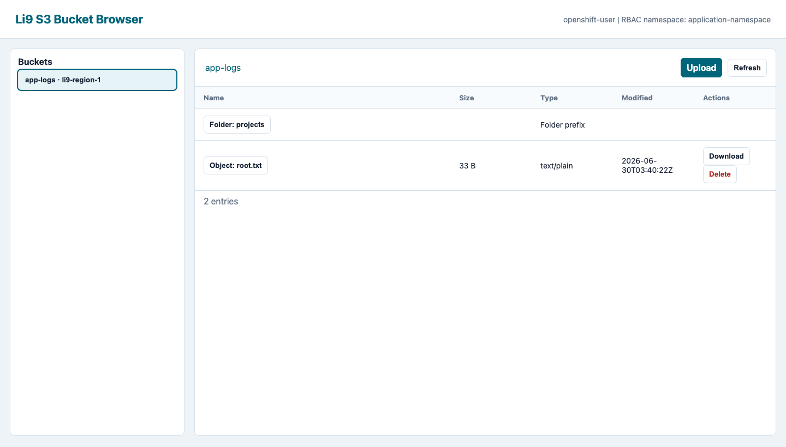
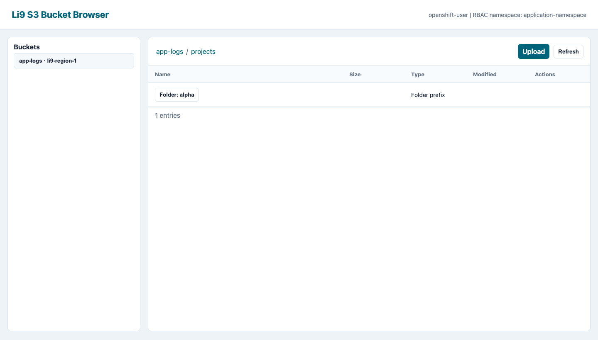

OpenShift RBAC bucket browser.
The operator can deploy an OAuth-protected web UI for browsing bucket contents. The browser uses OpenShift identity and Kubernetes RBAC for interactive access; ordinary applications still use AWS-compatible credentials from S3BucketAccess.
What It Does
The bucket browser is an optional console surface owned by S3Storage.spec.console. When enabled, the operator deploys one s3-console Deployment with two containers: the Li9 S3 console app and the OpenShift OAuth proxy. Users authenticate through OpenShift OAuth, then the console checks the user's token with SelfSubjectAccessReview before showing buckets, prefixes, objects, upload, download, or delete actions.


Enable The Browser
apiVersion: storage.li9.com/v1alpha1
kind: S3Storage
metadata:
name: li9-s3
namespace: li9-s3-runtime
spec:
console:
enabled: true
rbacNamespace: app-team
route:
enabled: true
exposure:
route:
enabled: false| Field | Description | Default Or Guidance |
|---|---|---|
spec.console.enabled | Deploys the OpenShift OAuth-protected bucket browser. | false. Enable only for OpenShift operator installs. |
spec.console.route.enabled | Creates an OpenShift Route for the web UI. | Defaults to true when console is enabled. Set false for Service-only access. |
spec.console.route.host | Optional fixed Route host for the browser. | Leave empty for an OpenShift-assigned host. Do not hard-code cluster-specific hosts in reusable manifests. |
spec.console.rbacNamespace | Namespace used for the bucket-object RBAC checks. | Defaults to the runtime service namespace. Set to the tenant namespace when bucket browsing should be granted there. |
spec.console.oauthProxyImage | Optional override for the OpenShift OAuth proxy image. | Leave unset unless the platform pins mirrored OpenShift images. |
Grant Browser Access
Grant users access to the virtual s3buckets/objects subresource in the namespace configured by spec.console.rbacNamespace. The resource name is the S3Bucket resource name, not the internal implementation bucket name.
cat <<'EOF' | oc -n app-team apply -f -
apiVersion: rbac.authorization.k8s.io/v1
kind: Role
metadata:
name: app-logs-browser-reader
rules:
- apiGroups: ["storage.li9.com"]
resources: ["s3buckets/objects"]
resourceNames: ["app-logs"]
verbs: ["list", "get"]
---
apiVersion: rbac.authorization.k8s.io/v1
kind: RoleBinding
metadata:
name: app-logs-browser-reader
roleRef:
apiGroup: rbac.authorization.k8s.io
kind: Role
name: app-logs-browser-reader
subjects:
- kind: User
apiGroup: rbac.authorization.k8s.io
name: alice@example.com
EOFUse write verbs only for users who should upload or delete objects from the browser.
cat <<'EOF' | oc -n app-team apply -f -
apiVersion: rbac.authorization.k8s.io/v1
kind: Role
metadata:
name: app-logs-browser-writer
rules:
- apiGroups: ["storage.li9.com"]
resources: ["s3buckets/objects"]
resourceNames: ["app-logs"]
verbs: ["list", "get", "create", "update", "delete"]
EOF| Browser Action | OpenShift RBAC Verb | Notes |
|---|---|---|
| Show bucket in the sidebar | list | The console lists runtime buckets, maps them to S3Bucket resources, then hides buckets denied by RBAC. |
| List prefixes and objects | list | Applies to the selected bucket resource name. |
| Download object | get | Returns the object through the console app after RBAC approval. |
| Upload object | create or update | Either verb allows a browser upload. |
| Delete object | delete | Use separate roles for destructive access. |
Verify
oc -n li9-s3-runtime wait s3storage/li9-s3 --for=condition=Ready --timeout=20m
oc -n li9-s3-runtime get route s3-console
oc -n app-team auth can-i list s3buckets.storage.li9.com/app-logs --subresource=objects --as=alice@example.com
oc -n app-team auth can-i delete s3buckets.storage.li9.com/app-logs --subresource=objects --as=alice@example.comSecurity Boundary
The browser does not replace S3 API credentials. It is for interactive browsing through OpenShift identity. Applications and automation should continue to use S3BucketAccess generated Secrets, OBC, COSI, or runtime-issued AWS-compatible credentials. Browser RBAC does not grant access to the S3 gateway, and S3 access keys do not grant access to the browser.